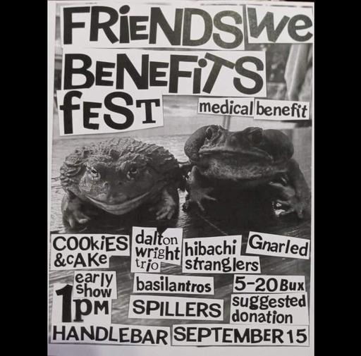

SUN SEP 15from the archive
Friends We Benefits Fest, Cookies & Cake, Dalton Wright, Hibachi Stranglers, Gnarled, The Basilantros, The Spillers
friends we benefits festcookies & cakedalton wrighthibachi stranglersgnarledthe basilantrosthe spillers
The Handlebar · 319 N Tarragona St, Pensacola, FL
doors 1pm
$5-$20 suggested donation
As a music scene & community, we strive to come together to help each other in times of need. We hope you will all come out to this very special Sunday matinee show to support Jess and offer her some love for all the work she has done humbly and behind the scenes with Chizuko, The Handlebar, The Azalea, and Night Moves!